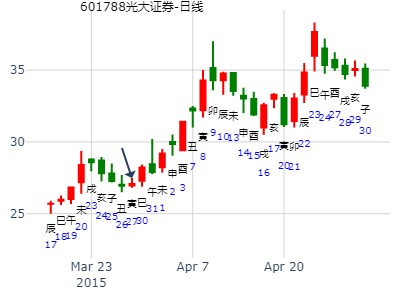
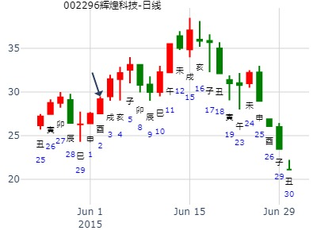

主帖标题: 000708中信特钢**tg能否上26元
000708 2021/01/04
庚子 戊子 壬子 乙巳 (寅卯空) 庚子年±月廿一(2021/01/04 09:25:26)
泽地萃 泽山咸
白虎 父母未土 ∥ 父母未土 ∥ 应
腾蛇 兄弟酉金 ／ 应 兄弟酉金 ／
勾陈 子孙亥水 ／ 子孙亥水 ／
朱雀 妻财卯木 × 兄弟申金 ／ 世
青龙 官鬼巳火 ∥ 世 官鬼午火 ∥
玄武 父母未土 ∥ 父母辰土 ∥
萃之咸。泰禾智能3个月，风生水起。
时间：2023年2月1日8点31分 星期三
干支：壬寅年 癸丑月 庚寅日 庚辰时（旬空：午未）
六神 藏爻 泽地萃 兑宫 泽地咸 兑宫
腾蛇 ■■ ■■父母未土 父母未土■■ ■■
勾陈 ■■■■■■兄弟酉金 应 兄弟酉金■■■■■■
朱雀 ■■■■■■子孙亥水 子孙亥水■■■■■■
青龙 父母丑土■■ ■■妻财卯木 ×→ 兄弟申金■■■■■■
玄武 妻财卯木■■ ■■官鬼巳火 世 官鬼午火■■ ■■
白虎 官鬼巳火■■ ■■父母未土 父母辰土■■ ■■
占事：华发股份今至下周五行情？
时间: 2015-03-12 9时11分
干支: 乙未年己卯月丁亥日 (旬空: 午未 )
泽地萃 泽山咸
六神 伏神 本 卦 变 卦
青龙 ▅▅ ▅▅ 父母未土 ▅▅ ▅▅ 父母未土 应
玄武 ▅▅▅▅▅ 兄弟酉金 应 ▅▅▅▅▅ 兄弟酉金
白虎 ▅▅▅▅▅ 子孙亥水 ▅▅▅▅▅ 子孙亥水
腾蛇 ▅▅ ▅▅ 妻财卯木 Ｘ→ ▅▅▅▅▅ 兄弟申金 世
勾陈 ▅▅ ▅▅ 官鬼巳火 世 ▅▅ ▅▅ 官鬼午火
朱雀 ▅▅ ▅▅ 父母未土 ▅▅ ▅▅ 父母辰土
六三：萃如，嗟如，无攸利，往无咎，小吝。
亥冲旺爻巳火暗动泄财，才跌。
起卦hour:2015年3月27日13时31分
时间: 2015-03-27
干支: 乙未年己卯月壬寅日 (旬空: 辰巳 )
泽地萃 泽山咸
六神 伏神 本 卦 变 卦
白虎 ▅▅ ▅▅ 父母未土 ▅▅ ▅▅ 父母未土 应
腾蛇 ▅▅▅▅▅ 兄弟酉金 应 ▅▅▅▅▅ 兄弟酉金
勾陈 ▅▅▅▅▅ 子孙亥水 ▅▅▅▅▅ 子孙亥水
朱雀 ▅▅ ▅▅ 妻财卯木 Ｘ→ ▅▅▅▅▅ 兄弟申金 世
青龙 ▅▅ ▅▅ 官鬼巳火 世 ▅▅ ▅▅ 官鬼午火
玄武 ▅▅ ▅▅ 父母未土 ▅▅ ▅▅ 父母辰土
财爻得日月旺，不怕克

时间: 2015-03-27 13时31分
干支: 乙未年己卯月壬寅日 (旬空: 辰巳 )
泽地萃 泽山咸
六神 伏神 本 卦 变 卦
白虎 ▅▅ ▅▅ 父母未土 ▅▅ ▅▅ 父母未土 应
腾蛇 ▅▅▅▅▅ 兄弟酉金 应 ▅▅▅▅▅ 兄弟酉金
勾陈 ▅▅▅▅▅ 子孙亥水 ▅▅▅▅▅ 子孙亥水
朱雀 ▅▅ ▅▅ 妻财卯木 Ｘ→ ▅▅▅▅▅ 兄弟申金 世
青龙 ▅▅ ▅▅ 官鬼巳火 世 ▅▅ ▅▅ 官鬼午火
玄武 ▅▅ ▅▅ 父母未土 ▅▅ ▅▅ 父母辰土
六三：萃如，嗟如，无攸利，往无咎，小吝。
虽是财化兄，但财爻值月日，不怕克。而兄弟申金被起卦日冲，不得月，无力。
只在申日震荡有空头力量。
酉日则冲旺卯空卯冲实，反而大涨。最后一直到4月9日辰月的卯日见顶。
2016-03-13
占事：2016.03.14-25日大盘走势 wukevin
起卦方式：手动摇卦
公历时间：2016年3月13日7时38分
干 支：丙申年 辛卯月 甲午日 戊辰时
旬 空：辰巳 午未 (辰巳) 戌亥
兑宫：泽地萃 兑宫：泽山咸
六神 【本 卦】 【变 卦】
玄武 ▄▄ ▄▄ 父母丁未土 ▄▄ ▄▄ 父母丁未土 应
白虎 ▄▄▄▄▄ 兄弟丁酉金 应 ▄▄▄▄▄ 兄弟丁酉金
螣蛇 ▄▄▄▄▄ 子孙丁亥水 ▄▄▄▄▄ 子孙丁亥水
勾陈 ▄▄ ▄▄ 妻财乙卯木 X ▄▄▄▄▄ 兄弟丙申金 世
朱雀 ▄▄ ▄▄ 官鬼乙巳火 世 ▄▄ ▄▄ 官鬼丙午火
青龙 ▄▄ ▄▄ 父母乙未土 ▄▄ ▄▄ 父母丙辰土 |
马后炮：本周此卦应在深圳综指和创业板。申酉跌。而上证申酉勉强红。
下图一为深证，图二为上证。
卯酉冲后，立即卯戌合，故酉跌戌涨。卯值月不怕克，只在流日二天被克。
占事：锐奇股份3.21-25走势 起卦方式：手工指定
公历时间：2016年3月18日22时17分
干 支：丙申年 辛卯月 己亥日 乙亥时
旬 空：辰巳 午未 (辰巳) 申酉
兑宫：泽地萃 兑宫：泽山咸
六神 【本 卦】 【变 卦】
勾陈 ▄▄ ▄▄ 父母丁未土 ▄▄ ▄▄ 父母丁未土 应
朱雀 ▄▄▄▄▄ 兄弟丁酉金 应 ▄▄▄▄▄ 兄弟丁酉金
青龙 ▄▄▄▄▄ 子孙丁亥水 ▄▄▄▄▄ 子孙丁亥水
玄武 ▄▄ ▄▄ 妻财乙卯木 X-> ▄▄▄▄▄ 兄弟丙申金 世
白虎 ▄▄ ▄▄ 官鬼乙巳火 世 ▄▄ ▄▄ 官鬼丙午火
螣蛇 ▄▄ ▄▄ 父母乙未土 ▄▄ ▄▄ 父母丙辰土
占事：硬币卦220112问五粮液半年走势-王
时间: 2019-03-27 12时50分
干支: 己亥年丁卯月癸亥日 (旬空: 子丑 )
泽地萃 泽山咸
六神 伏神 本 卦 变 卦
白虎 ▅▅ ▅▅ 父母未土 ▅▅ ▅▅ 父母未土 应
腾蛇 ▅▅▅▅▅ 兄弟酉金 应 ▅▅▅▅▅ 兄弟酉金
勾陈 ▅▅▅▅▅ 子孙亥水 ▅▅▅▅▅ 子孙亥水
朱雀 ▅▅ ▅▅ 妻财卯木 Ｘ→ ▅▅▅▅▅ 兄弟申金 世
青龙 ▅▅ ▅▅ 官鬼巳火 世 ▅▅ ▅▅ 官鬼午火
玄武 ▅▅ ▅▅ 父母未土 ▅▅ ▅▅ 父母辰土
六三：萃如，嗟如，无攸利，往无咎，小吝。
财子分别得日月，世旺，一路涨，酉月才真正跌了一下。
主帖标题: Q北方华创3.15壬戌一 -3.19丙寅五哪日顶？
Q北方华创3.15壬戌一 -3.19丙寅五哪日顶
公历起卦时间：2021年3月16日6时21分 (电脑自动)
干支：辛丑年 辛卯月 癸亥日 乙卯时 （日空：子丑）
兑宫：泽地萃 兑宫：泽山咸
六神 伏神 本 卦 变 卦
白虎 父母丁未土 ▅▅ ▅▅ 父母丁未土 ▅▅ ▅▅ 应
螣蛇 兄弟丁酉金 ▅▅▅▅▅ 应 兄弟丁酉金 ▅▅▅▅▅
勾陈 子孙丁亥水 ▅▅▅▅▅ 子孙丁亥水 ▅▅▅▅▅
朱雀 妻财乙卯木 ▅▅ ▅▅ ╳→ 兄弟丙申金 ▅▅▅▅▅ 世
青龙 官鬼乙巳火 ▅▅ ▅▅ 世 官鬼丙午火 ▅▅ ▅▅
玄武 父母乙未土 ▅▅ ▅▅ 父母丙辰土 ▅▅ ▅▅
此卦跌，
1钥语不象问走势
2动态旬空戌亥空。子孙空。
主帖标题: 有色季，想入辉煌科技，接下来两周涨幅如何？
出生：1985 年 性别：男 占事：辉煌科技接下来两周涨幅如何？
公历起卦时间：2015年6月2日20时31分 (报双数起卦-动爻加时辰)
干支：乙未年 辛巳月 己酉日 甲戌时 （日空：寅卯）
神煞：驿马－亥 桃花－午 日禄－午 贵人－子，申
兑宫：泽地萃 兑宫：泽山咸
六神 伏神 本 卦 变 卦
勾陈 父母丁未土 ▅▅ ▅▅ 父母丁未土 ▅▅ ▅▅ 应
朱雀 兄弟丁酉金 ▅▅▅▅▅ 应 兄弟丁酉金 ▅▅▅▅▅
青龙 子孙丁亥水 ▅▅▅▅▅ 子孙丁亥水 ▅▅▅▅▅
玄武 妻财乙卯木 ▅▅ ▅▅ ╳→ 兄弟丙申金 ▅▅▅▅▅ 世
白虎 官鬼乙巳火 ▅▅ ▅▅ 世 官鬼丙午火 ▅▅ ▅▅
腾蛇 父母乙未土 ▅▅ ▅▅ 父母丙辰土 ▅▅ ▅▅
卯木旬空被冲实。反而不跌。8日出空反而挨宰，

乙策周卦经典： 财化兄，卯化申，申日暴跌。
2020年7月10日
占上证指数7月13-17日走势
癸未月 乙卯日 (日空：子丑)
泽地萃/兑宫 泽山咸/兑宫
玄 父未 -- 父未 -- 应
虎 兄酉 — 应 兄酉 —
蛇 孙亥 — 孙亥 —
勾 财卯 -- x 兄申 — 世
雀 官巳 -- 世 官午 --
龙 父未 -- 父辰 --

测2014年8月7日大盘.md
起卦方式：手工指定 在线排盘系统
公历时间：2014年8月6日15时10分
干支：甲午年 辛未月 己酉日 壬申时 旬空：辰巳 戌亥 (寅卯) 戌亥
兑宫：泽地萃 兑宫：泽山咸
六神 【本 卦】 【变 卦】
勾陈 ▄▄ ▄▄ 父母丁未土 ▄▄ ▄▄ 父母丁未土 应
朱雀 ▄▄▄▄▄ 兄弟丁酉金 应 ▄▄▄▄▄ 兄弟丁酉金
青龙 ▄▄▄▄▄ 子孙丁亥水 ▄▄▄▄▄ 子孙丁亥水
玄武 ▄▄ ▄▄ 妻财乙卯木 X-> ▄▄▄▄▄ 兄弟丙申金 世
白虎 ▄▄ ▄▄ 官鬼乙巳火 世 ▄▄ ▄▄ 官鬼丙午火
螣蛇 ▄▄ ▄▄ 父母乙未土 ▄▄ ▄▄ 父母丙辰土
六三：萃如，嗟如，无攸利，往无咎，小吝。
象曰：往无咎，上巽也。
占事：600284浦东建设23日涨跌
公历起卦时间：2013年10月22日15时4分 (电脑自动)
干支：癸巳年 壬戌月 辛酉日 丙申时 （日空：子丑）
神煞：驿马－亥 桃花－午 日禄－酉 贵人－寅，午
兑宫：泽地萃 兑宫：泽山咸
六神 伏神 本 卦 变 卦
腾蛇 父母丁未土 ▅▅ ▅▅ 父母丁未土 ▅▅ ▅▅ 应
勾陈 兄弟丁酉金 ▅▅▅▅▅ 应 兄弟丁酉金 ▅▅▅▅▅
朱雀 子孙丁亥水 ▅▅▅▅▅ 子孙丁亥水 ▅▅▅▅▅
青龙 妻财乙卯木 ▅▅ ▅▅ ╳→ 兄弟丙申金 ▅▅▅▅▅ 世
玄武 官鬼乙巳火 ▅▅ ▅▅ 世 官鬼丙午火 ▅▅ ▅▅
白虎 父母乙未土 ▅▅ ▅▅ 父母丙辰土 ▅▅ ▅▅
占事：大连电瓷未来二周。
时间: 2021-11-14 12：25
干支: 辛丑年己亥月丙寅日甲午时 (旬空: 戌亥 )
泽地萃 泽山咸
六神 伏神 本 卦 变 卦
青龙 ▅▅ ▅▅ 父母未土 ▅▅ ▅▅ 父母未土 应
玄武 ▅▅▅▅▅ 兄弟酉金 应 ▅▅▅▅▅ 兄弟酉金
白虎 ▅▅▅▅▅ 子孙亥水 ▅▅▅▅▅ 子孙亥水
腾蛇 ▅▅ ▅▅ 妻财卯木 Ｘ→ ▅▅▅▅▅ 兄弟申金 世
勾陈 ▅▅ ▅▅ 官鬼巳火 世 ▅▅ ▅▅ 官鬼午火
朱雀 ▅▅ ▅▅ 父母未土 ▅▅ ▅▅ 父母辰土
六三：萃如，嗟如，无攸利，往无咎，小吝。

26日寅日考验冲动态旬空的兄弟申金，是冲实，还是冲散？
马后炮：结果是冲散而涨。